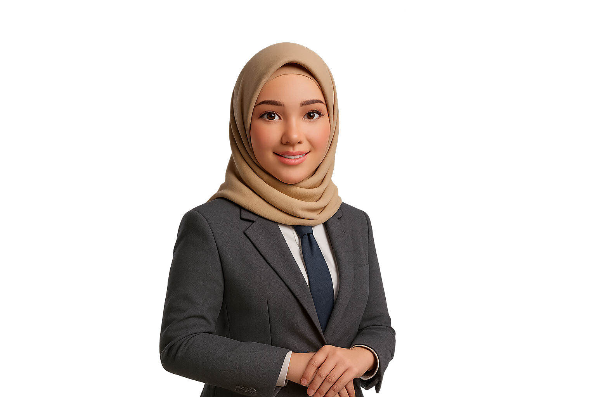
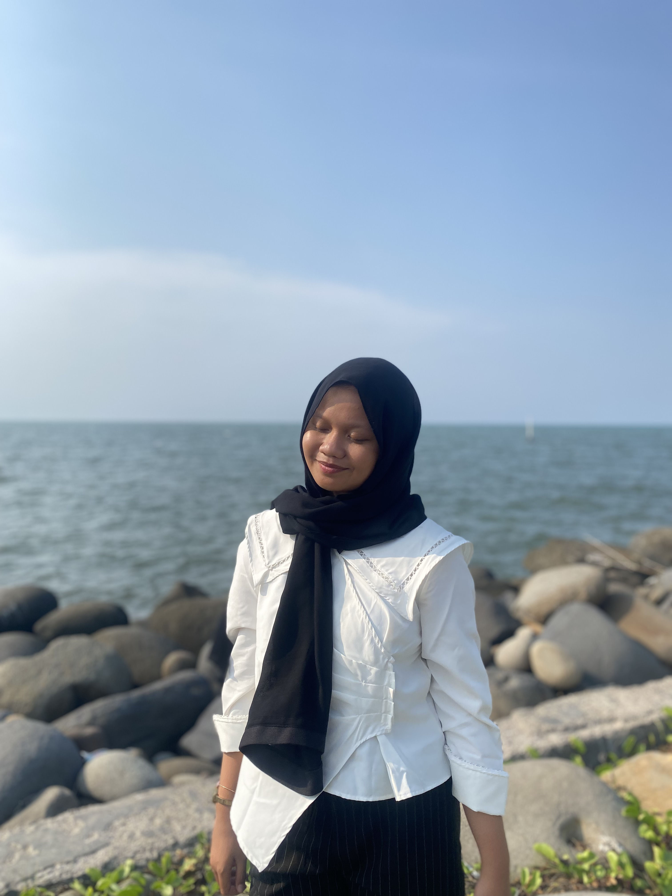
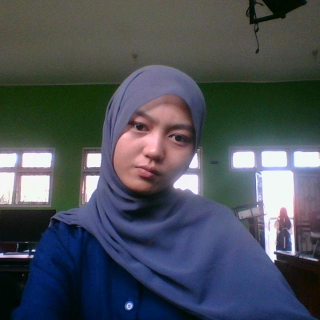
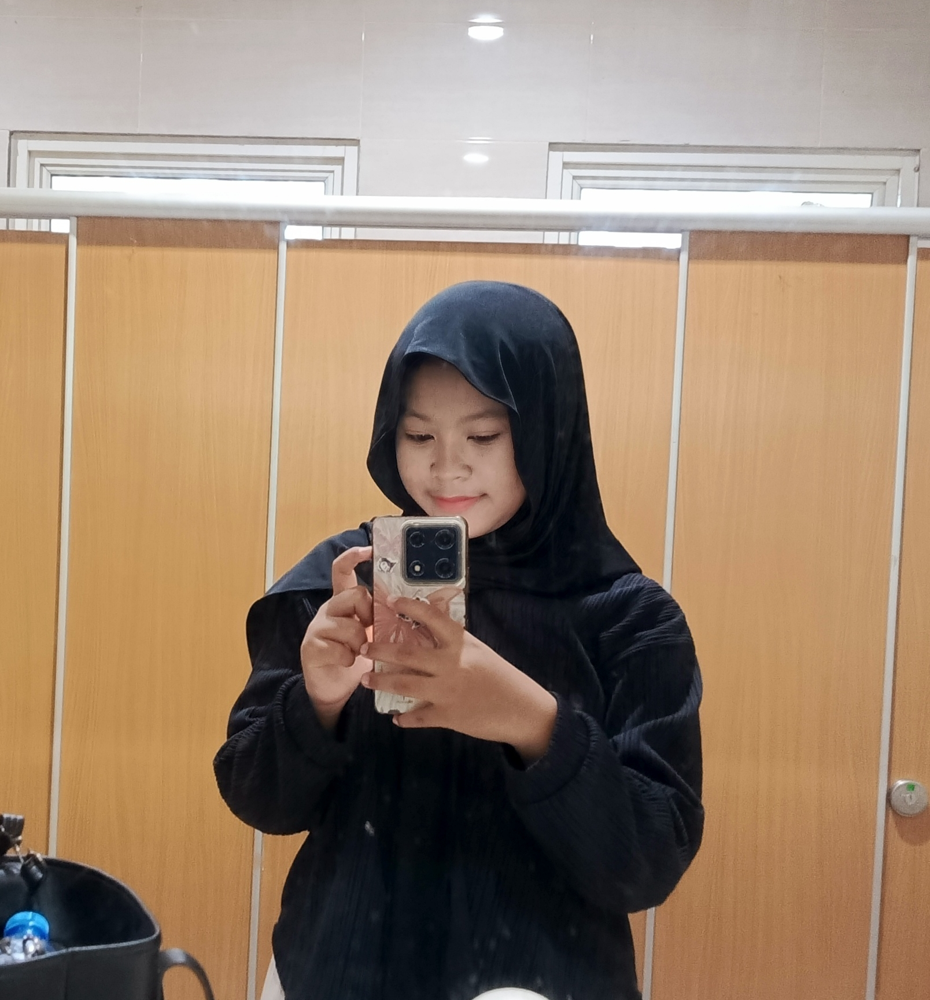

Bergabunglah dengan Program Sains Data UIN Gus Dur, program unggulan yang mempersiapkan Anda menjadi profesional data yang kompeten, inovatif, dan beretika. Pelajari machine learning, big data, dan analitik modern dengan pendekatan berbasis riset dan nilai-nilai Islam. Siap berkarier di era teknologi 4.0 dan 5.0.
Program studi yang mempersiapkan generasi data scientist untuk menghadapi era digital dan revolusi industri 4.0
📊
Apa itu Sains Data?
Sains Data adalah bidang interdisipliner yang menggabungkan ilmu statistika, matematika, pemrograman, dan domain knowledge untuk mengekstrak wawasan dan pengetahuan dari data.
Program studi ini fokus pada pengolahan data mentah menjadi informasi berharga yang dapat digunakan untuk pengambilan keputusan strategis dalam berbagai industri.
🎓
Lulusan Sains Data
Lulusan program Sains Data akan memiliki kompetensi dalam:
Analisis data dan visualisasi
Machine Learning dan AI
Pemrograman Python/R untuk data science
Big Data processing dengan Hadoop/Spark
Database management dan SQL
Statistical modeling dan forecasting
💼
Prospek Kerja
Lulusan Sains Data memiliki peluang karir yang sangat luas di berbagai sektor:
Data Scientist - Perusahaan teknologi, fintech, e-commerce
Data Analyst - Perusahaan retail, kesehatan, manufaktur
Machine Learning Engineer - Startup AI, perusahaan R&D
Business Intelligence Analyst - Perusahaan konsultan
Data Engineer - Perusahaan big data
95%
Tingkat Penyerapan Kerja
Rp 15-25jt
Gaji Entry Level
500+
Perusahaan Mitra
4.8/5
Kepuasan Mahasiswa
Visi & Misi
Unggul dalam sains data berorientasi pada Big Data dan Bisnis Digital untuk kemanusiaan berlandaskan budaya bangsa
🎯
Visi Keilmuan
"Unggul dalam sains data berorientasi pada Big Data dan Bisnis Digital untuk kemanusiaan berlandaskan budaya bangsa"
Visi ini menekankan pada penguasaan teknologi Big Data dan aplikasinya dalam bisnis digital, dengan tetap mempertahankan nilai-nilai kemanusiaan dan budaya Indonesia.
🎓
Menciptakan Lulusan Unggul
Menyelenggarakan pendidikan yang menghasilkan lulusan yang unggul dalam bidang sains data, dengan landasan moral dan budaya bangsa.
Pengembangan kurikulum berbasis kompetensi
Pembentukan karakter Islami dan nasionalis
Pembekalan soft skills dan leadership
Penguatan nilai-nilai budaya bangsa
🔬
Mengembangkan Ilmu Pengetahuan
Mengembangkan ilmu pengetahuan dan teknologi informasi serta pangkalan data di UIN Gusdur, dengan fokus pada Big Data dan Bisnis Digital.
Penelitian inovatif di bidang Big Data
Pengembangan platform bisnis digital
Pembangunan repository data nasional
Inovasi teknologi informasi terkini
🤝
Solusi untuk Kemanusiaan
Mengaplikasikan sains data untuk kemanusiaan dan bisnis digital yang beretika dan berkelanjutan.
Data untuk pembangunan sosial
Teknologi untuk UMKM digital
Analisis data kemanusiaan
Bisnis digital yang beretika
🏗️
Infrastruktur TI
Membangun dan menciptakan infrastruktur teknologi informasi yang diperlukan, serta memberikan pelayanan yang terpadu.
Data center modern
Cloud computing infrastructure
Learning management system
Support system terintegrasi
🌐
Kemitraan Strategis
Menjalin kerjasama yang menguntungkan dengan berbagai pihak untuk kemajuan teknologi informasi dan pangkalan data.
Kerjasama dengan industri teknologi
Kolaborasi dengan pemerintah
Kemitraan internasional
Jaringan alumni yang kuat
Area Fokus
Tiga pilar utama pengembangan Sains Data UIN Gusdur
📊
Big Data
Analisis data skala besar untuk insight bisnis dan sosial
💼
Bisnis Digital
Aplikasi data science dalam transformasi digital bisnis
❤️
Kemanusiaan
Pemanfaatan data untuk solusi masalah kemanusiaan
Dosen & Staff
Tim pengajar dan tenaga kependidikan yang berpengalaman dan berdedikasi dalam bidangnya masing-masing.

UM
Umi Mahmudah, Ph.D.
Ketua Program Studi
Akademisi dan peneliti dengan fokus pada Artificial Intelligence dan Machine Learning. Memiliki lebih dari 10 tahun pengalaman penelitian, publikasi ilmiah, serta pengembangan solusi berbasis data; berpengalaman memimpin proyek riset, membimbing mahasiswa, dan menerapkan model AI di dunia industri dan akademik.
Artificial IntelligenceMachine LearningDeep LearningNatural Language ProcessingComputer VisionData Science & Big DataResearch & Publication
PR
Ina Mutmainah, M.Ak.
Sekretaris Program Studi
Dosen dan praktisi di bidang Akuntansi dengan fokus pada akuntansi keuangan, auditing, serta pelaporan keuangan. Memiliki pengalaman dalam pengajaran, penyusunan laporan keuangan, dan pendampingan mahasiswa dalam penelitian akuntansi terapan.
Akuntansi KeuanganAuditingPelaporan KeuanganAkuntansi ManajemenAnalisis Laporan KeuanganPerpajakan Dasar
DS
Drajat Stiawan, M.Si.
Dosen
Dosen dengan latar belakang ilmu matematika murni. Berpengalaman dalam mengajar mata kuliah berbasis logika dan penalaran matematika, serta aktif dalam penelitian bidang matematika diskrit dan fondasi ilmu komputer.
Praktisi dan akademisi di bidang Manajemen dan Komunikasi Bisnis. Memiliki keahlian dalam membangun hubungan dengan publik, strategi komunikasi perusahaan, dan manajemen citra.
Public RelationManajemen KomunikasiStrategi BisnisManajemen Perusahaan
SA
Syamsul Arifin, M.E.I.
Dosen
Dosen dengan konsentrasi pada integrasi ilmu agama dan sains. Fokus pada kajian Al-Qur'an dan Hadist dalam perspektif ilmiah kontemporer serta pengembangan paradigma sains Islam.
Studi Al-Qur'an & HadistIntegrasi Sains & IslamEkonomi IslamFilsafat Sains Islam
FK
Fitri Kurniawati, M.E.Sy.
Dosen
Dosen dengan fokus pada studi agama dan moderasi. Berpengalaman dalam pengajaran nilai-nilai moderasi beragama, etika, dan pengembangan kurikulum pendidikan agama yang inklusif.
Moderasi BeragamaEtikaStudi IslamPendidikan Karakter
RA
Rohmad Abidin, M.Kom.
Dosen
Dosen di bidang ilmu komputer dengan spesialisasi algoritma dan pemrograman. Berpengalaman dalam mengajar dasar-dasar pemrograman dan struktur data, serta pengembangan aplikasi sederhana.
AlgoritmaPemrograman DasarStruktur DataSoftware Development
DA
Dicky Anggriawan, M.Kom
Dosen
Dosen dengan minat pada penulisan akademik dan komunikasi ilmiah. Berpengalaman membimbing mahasiswa dalam penulisan karya ilmiah, prosedur publikasi, dan metodologi penelitian.
Dosen dengan fokus pada visualisasi data dan analisis grafis. Berpengalaman menggunakan berbagai tools visualisasi untuk menyajikan data kompleks menjadi informasi yang mudah dipahami.
Dosen dengan spesialisasi dalam pengajaran algoritma dan pemrograman tingkat dasar. Berkomitmen untuk membangun fondasi logika pemrograman yang kuat bagi mahasiswa.
Dosen pendidikan matematika dengan spesialisasi matematika diskrit. Memiliki pendekatan pedagogis yang efektif untuk mengajarkan konsep-konsep matematika abstrak.
Matematika DiskritPedagogi MatematikaTeori GrafKombinatorika
IP
Imam Prayogo Pujiono, M.Kom.
Dosen
Dosen dengan minat dalam kewirausahaan berbasis sains dan teknologi. Berpengalaman dalam membimbing startup dan pengembangan bisnis model inovasi teknologi.
Science EntrepreneurshipStartup DevelopmentBisnis Model InovasiManajemen Teknologi
NL
Nalim, M.Si.
Dosen
Dosen matematika terapan dengan keahlian dalam optimasi dan pemodelan matematika. Fokus pada program linier dan metode kuantitatif untuk solusi masalah industri.
Program LinierOptimasiPemodelan MatematikaMetode Kuantitatif
QA
Qorry Aina Fitroh, S.Pd., M.Kom.
Dosen
Dosen dengan latar belakang pendidikan dan komputer. Mengkhususkan diri pada aljabar linier terapan untuk komputasi dan analisis data.
Aljabar Linier TerapanKomputasi MatematikaAnalisis NumerikPendidikan Komputer
AT
Akrim Teguh Suseno, S.Kom., M.T.I.
Dosen
Dosen dengan keahlian dalam struktur data dan rekayasa perangkat lunak. Berpengalaman dalam pengembangan aplikasi dan implementasi struktur data kompleks.
Struktur DataRekayasa Perangkat LunakAlgoritma LanjutSoftware Engineering
HR
Hanik Rosyidah, M.H.
Dosen
Dosen hukum dengan spesialisasi dalam pendidikan kewarganegaraan dan Pancasila. Berpengalaman dalam mengajar nilai-nilai kebangsaan dan etika berbangsa.
Dosen pendidikan matematika dengan fokus pada aljabar linier terapan. Memiliki ketertarikan pada pengembangan metode pembelajaran matematika yang inovatif.
Dosen bahasa Inggris dengan spesialisasi dalam komunikasi bisnis. Berpengalaman dalam pengajaran bahasa Inggris untuk tujuan khusus dan komunikasi lintas budaya.
Bahasa Inggris BisnisKomunikasi Lintas BudayaEnglish for Specific PurposesBusiness Communication
SM
Sumiyati, S.E., M.M.
Staff Administrasi
Bertanggung jawab dalam pengelolaan administrasi keuangan dan akademik program studi. Memiliki pengalaman panjang dalam tata kelola administrasi perguruan tinggi.
Profil mahasiswa berprestasi Program Studi Sains Data UIN Gusdur
NS
Nabil Surya Al Hakim
Mahasiswa Sains Data - 60124044
Mahasiswa Sains Data yang aktif dan kreatif dengan minat kuat dalam desain visual dan editing. Memiliki kemampuan dalam mengembangkan materi visual pendukung analisis data dan presentasi hasil penelitian. Aktif dalam organisasi kemahasiswaan dan proyek desain grafis.
Video EditingDesain GrafisVisualisasi DataCreative SoftwareDigital Content Creation

AP
Amalia Putri Setya Aryana
Mahasiswa Sains Data - 60124040
Mahasiswa dengan kemampuan analitis yang kuat dan ketertarikan mendalam pada matematika terapan. Unggul dalam pemecahan masalah kompleks dan berpikir kritis. Aktif dalam kegiatan akademik dan penelitian, dengan fokus pada penerapan konsep matematika dalam analisis data.
Matematika TerapanCritical ThinkingAnalisis KuantitatifProblem SolvingStatistical Reasoning

FA
Fitri Amalia
Mahasiswa Sains Data - 60124044
Mahasiswa Sains Data yang sedang mengembangkan keahlian dalam bidang analisis data dan pemrograman. Aktif mengikuti perkuliahan dan praktikum dengan ketertarikan pada penerapan sains data dalam bidang sosial dan humaniora. Berkomitmen untuk terus belajar dan berkembang dalam bidang data science.
Data AnalysisPython ProgrammingResearch MethodologyData CollectionAcademic Writing

YZ
Yuniar Zahra
Mahasiswa Sains Data - 60124044
Mahasiswa yang antusias mempelajari berbagai aspek sains data, mulai dari pengolahan data hingga interpretasi hasil. Memiliki minat dalam penerapan data science untuk solusi bisnis dan masyarakat. Aktif dalam diskusi kelompok dan kolaborasi proyek analisis data.
Data ProcessingBusiness IntelligenceTeam CollaborationData InterpretationCommunication Skills
Video Podcast
Kumpulan diskusi dan wawasan menarik seputar teknologi, desain, dan bisnis digital dari para ahli kami.
Masa Depan AI dalam Pendidikan Tinggi
Diskusi mendalam tentang bagaimana kecerdasan buatan akan mengubah landscape pendidikan tinggi di Indonesia.
🕒44:10
📅24 Nov 2025
UI/UX Trends 2023: Apa yang Perlu Diketahui?
Eksplorasi tren terbaru dalam desain antarmuka dan pengalaman pengguna untuk aplikasi modern.
🕒38:45
📅22 Feb 2023
Startup Digital: Dari Ide ke Eksekusi
Bagaimana mengubah ide bisnis digital menjadi startup yang viable dan scalable di pasar Indonesia.